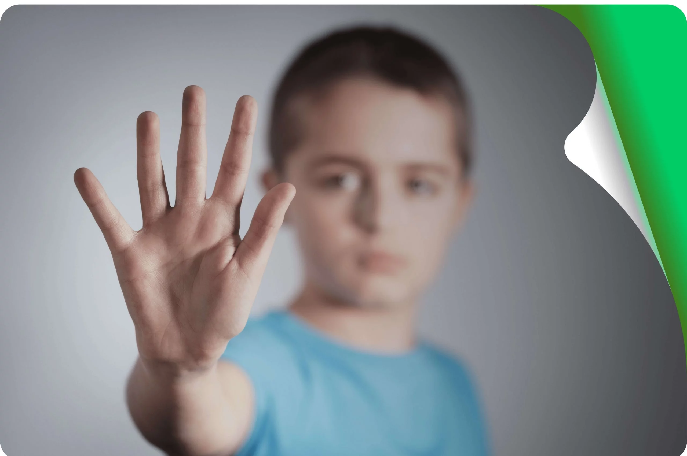

Bem-Estar Emocional
A Importância do Diálogo Aberto: Como Conversar com Crianças Sobre Bullying
Criar um ambiente onde as crianças se sintam seguras para compartilhar suas preocupações é o primeiro passo para combater o bullying. Neste artigo, exploramos 5 dicas práticas para iniciar essa conversa em casa e na escola...
Ler Artigo CompletoPosts Recentes
Cidadania Digital
5 Dicas para a Segurança dos Pequenos nas Redes Sociais
Guia rápido para pais e educadores sobre como orientar o uso seguro das plataformas online.
Leia Mais →
Segurança Física
Escola Segura, Aluno Tranquilo: O Checklist da Infraestrutura
O que observar na estrutura física da escola para garantir um ambiente livre de acidentes?
Leia Mais →

Para Alunos
Missão Amizade: Como ser um Herói Anti-Bullying na sua Turma
Pequenas atitudes que fazem uma grande diferença para criar um clima de respeito e amizade.
Leia Mais →